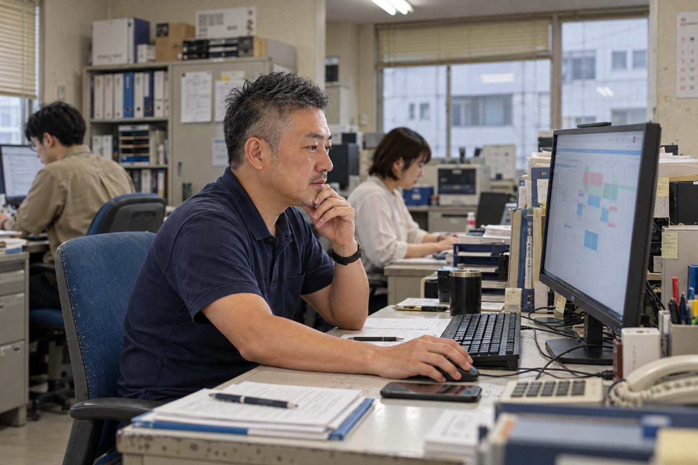

生成AIの導入と業務改善現場の仕事から、
現場の仕事から、
使いやすい仕組みへ。
どんな課題があり、何を整え、人がどこを確認するか。実際の取り組みから、仕事を見直す考え方をご紹介します。
初回のご相談は無料です。まずは、御社の仕事の話を
無料で相談するまずは、御社の仕事の話を
聞かせてください。
「毎回ここに時間がかかる」「何から始めればいいか分からない」。
そのお話から、御社に合う始め方を一緒に考えます。
Googleフォームが別のタブで開きます。機密情報や個人情報を含む業務資料は、初回のお問い合わせには添付しないでください。